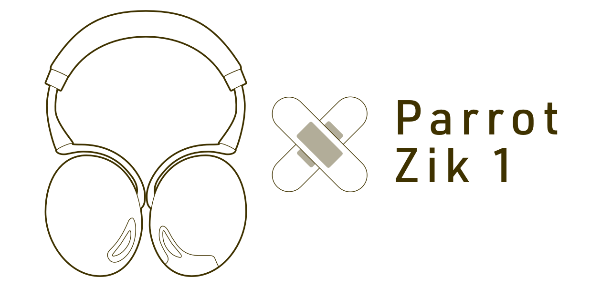

ドローンで有名なParrot社のワイヤレスヘッドホンZikを使っているのですが、長く使っているせいでイヤーパッドの皮がボロボロと剥がれ、縁の一部が切れて中のスポンジが露出する事態になっていました。
修理をしようにも一番古いモデルかつ、Parrot社自体がオーディオ関連から手を引いており、結構絶望的な状況です。
とりあえずヘッドホンカバーを着けてしのいでいましたが、サードパーティー製のイヤーパッドを発見したため交換してみました。
購入した商品はこちら。
色は黒しかないので、黒以外だと強制的にツートーンカラーになります。Amazon.comならもっと安いので、届くのに時間がかかってもいい人はそちらで購入するとよいでしょう。
また「D.I.Y SKILL REQUIRED」な商品でして、販売元の交換手順動画を見て自分でもできそうか確認してください。
手順としては動画の通りなのですが、ちょっとわかりづらい部分を補足してみたいと思います。
準備
作業に際して、あると便利な道具です。
- ピンセット
- テープ（ボロボロになった皮を取り除く）
- はさみ
あとバッテリーは外しておきましょう。
左右のイヤーパッドを外す
イヤーパッドは8つのツメで固定されていて、何箇所か外せば1箇所外せば楽に外せるでしょう。ツメの位置は、ハウジングを覗いてみると確認できます。
まずはセンサーのない左側を外してみるとコツがわかると思います。
センサーを外す
右側のイヤーパッドにあるセンサーを外していきます。
センサーはポケットに入っていますが、その接着部分が劣化してると思うのでポケットだけ簡単に取れます。取っておくと作業がしやすくなります。
センサーは捻られたリード線のついた音声検出センサーと、リード線が2本繋がった接触センサーの合計2つがあります。
音声検出センサーは、リード線とセンサーでポケット挟みこむように固定されているので、リード線を少し起こしてからセンサーをポケットから出します。
接触センサーは、リード線が脱着できるようになっています。接合部分をピンセットなどで抑え、力を入れて抜いてください。また、つける端子が決まっているので、わからなくなりそうな人は抜く前に写真を撮るなど後から分かるようにしておきましょう。
両方のリード線を外したら、ポケットからセンサーを取り出します。両方とも無理に出すよりも、ポケットをはさみなどで切ってから出したほうが安全だったのでは？ と作業した後に思いました。
センサーを取り付ける
取り外したセンサーを、新しいイヤーパッドへ取り付けます。さっきとは逆の手順ですが、リード線の長さに限りがあるので、慎重に取り回ししましょう。
イヤーパッドを取り付ける
本体を平らな場所に置き、1箇所だけツメを噛み合わせたら、イヤーパッドを上から押さえるようにすると簡単にはめ込めます。
これでヘッドホンカバーをしなくても、人目をはばかることなく装着できるようになりました（ヘッドバンド部分は無視）。
ただ、革の劣化自体が防げそうなのと、長時間の使用で耳が痛くなるのを緩和するために、スポンジ隠しのカバーはそのまま使っています。カラーバリエーションもあるので、ちょっと見た目を変えたいなってときにもオススメです。